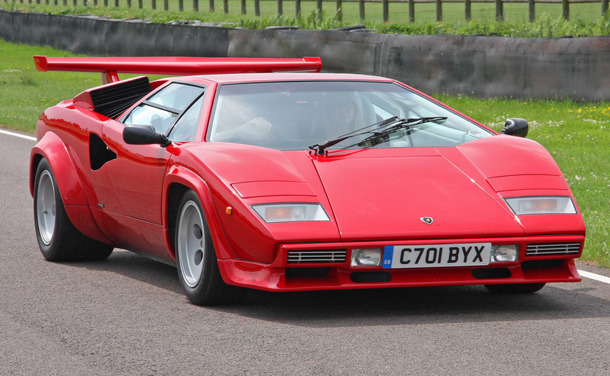
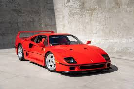
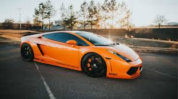
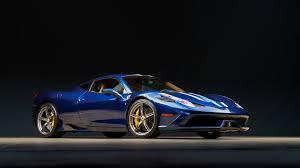
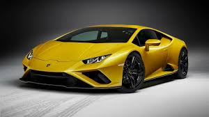
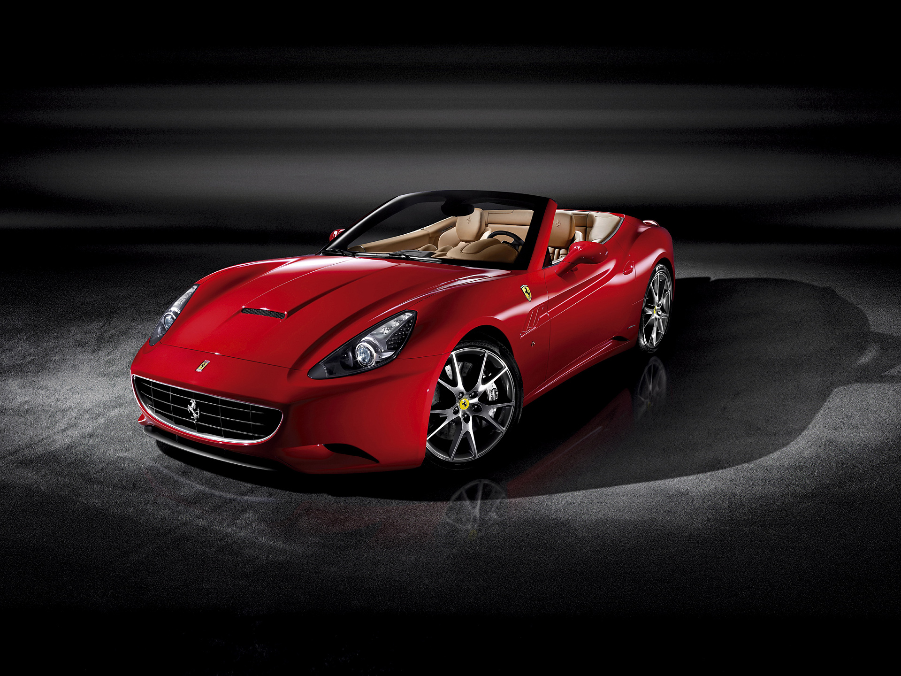
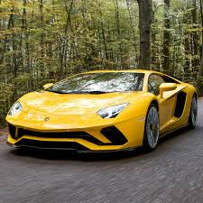
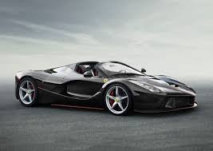

Lamborghini Countach
1974–1990
Horsepower
455 hp
0–60
5.4 sec
Top Speed
183 mph

Ferrari F40
1987–1992
Horsepower
471 hp
0–60
4.1 sec
Top Speed
201 mph

Lamborghini Gallardo
2003–2013
Horsepower
562 hp
0–60
3.7 sec
Top Speed
202 mph

Ferrari 458 Italia
2009–2015
Horsepower
562 hp
0–60
3.3 sec
Top Speed
210 mph

Lamborghini Huracán
2014–2023
Horsepower
602 hp
0–60
2.9 sec
Top Speed
202 mph

Ferrari California T
2014–2017
Horsepower
553 hp
0–60
3.6 sec
Top Speed
196 mph

Lamborghini Aventador
2011–2022
Horsepower
730 hp
0–60
2.9 sec
Top Speed
217 mph

Ferrari LaFerrari
2013–2018
Horsepower
949 hp
0–60
2.6 sec
Top Speed
218 mph